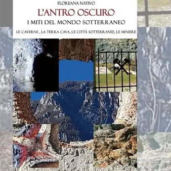

mer 14 ott · dalle 18:00
L'antro oscuro. I miti del mondo sotterraneo
mercoledì 14 ottobre 2026 ore 18.00Udine - Biblioteca Civica "V. Joppi" - Sala Tito Maniacco - Palazzo Bartolini - piazza Marconi 8 per la rassegna di "Dialoghi in Biblioteca", si terrà la presentazione del libro edito da Tralerighe libri:: L'antro oscuro. I miti del mondo…
 Indicazioni
Indicazioni
- Costi e prenotazioni
- Costo non indicato · Prenotazione non indicata
- Programma
- Programma da verificare. Apri la fonte ufficiale per orari e possibili aggiornamenti.
- In caso di maltempo
- Nessuna indicazione specifica pubblicata.
- Note
- Acquisito automaticamente dalla fonte.
L’EVENTO
Descrizione completa
Per la rassegna di "Dialoghi in Biblioteca", si terrà la presentazione del libro edito da Tralerighe libri: L'antro oscuro. I miti del mondo sotterraneo Le caverne, la terra cava, le città sotterranee, le miniere Di Floreana Nativo , dialogano con l'autrice Giuseppe Fiorica e Romano Vecchiet . L’Antro oscuro ci accompagnerà in un viaggio insolito che si snoderà nei suoi meandri più profondi. Un viaggio che inizierà dalla preistoria dell’uomo fino ai tempi moderni. Un percorso non solo fisico, volto a scoprire l’influenza che il rifugio nella montagna, ossia la Caverna, ha avuto sull’umanità. Il suo apporto alla civilizzazione, alla religione, alla filosofia e anche ai vari miti sul Mondo Sotterraneo che dapprima sono divenute leggende, poi fiabe da raccontare ai bambini accanto al fuoco in una notte di tempesta. Miti che hanno influenzato scrittori ipotizzando teorie come quelle della Terra Cava o provando a riscrivere la Storia, come nel caso del III° Reich, dove il dittatore Hitler finanziò ricerche sui mondi perduti sotto l’Himalaya.
Ma scopriremo nel libro che le città sotterranee esistono veramente o sono esistite. Dovute a necessità meteorologiche o a difesa degli abitanti ed anche in Italia quando passeggiamo tranquillamente in un viale di Roma, Milano o Bologna spesso non sappiamo che sotto i nostri piedi esiste o è esistita una realtà sotterranea e parallela.
Infine la miniera, quella ferita inferta alla Montagna per estrarre i preziosi minerali che fin dal tempo dei Greci ci hanno permesso di rendere più agevole la nostra vita. Sfruttamento delle miniere che si è evoluto nel tempo, a volte con effetti disastrosi come nel caso di quella di Marcinelle in Belgio e comunque sempre con condizioni estreme di lavoro. In tempi quasi contemporanei sono sorti vari Musei delle miniere che mostrano la fatica di vivere dell’uomo.
Info: Sezione Moderna 0432 127 2589 bcusm@comune.udine.it
L'appuntamento sarà visibile anche in diretta sul canale youtube di SBHU
IL PROGRAMMA
Programma e orari
Appuntamenti raccolti dalle fonti elencate. Dove manca un orario, non è ancora disponibile in questa scheda.
Programma pubblicato
- Dal 2026-10-14 al 2026-10-14
INFORMAZIONI UTILI
Prima di partire
- Controllare la fonte prima di partire.
ORGANIZZAZIONE